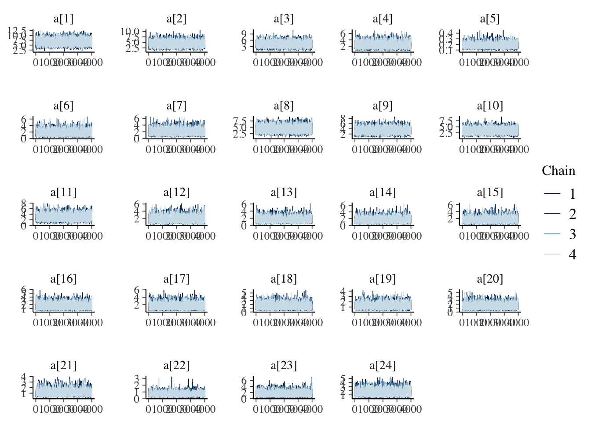
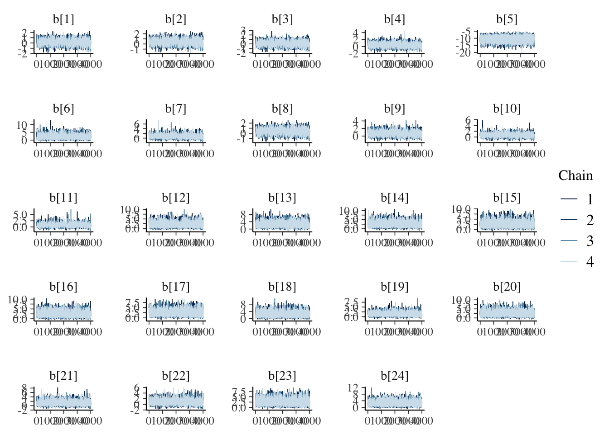
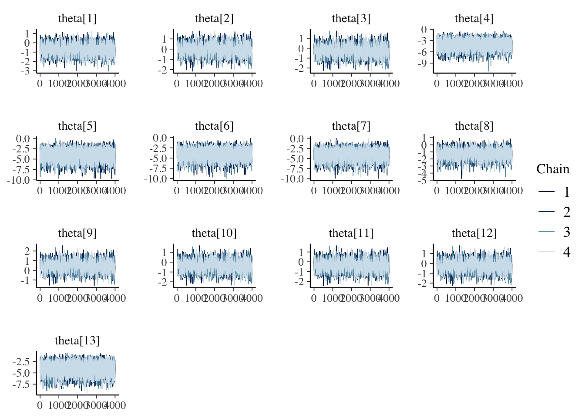
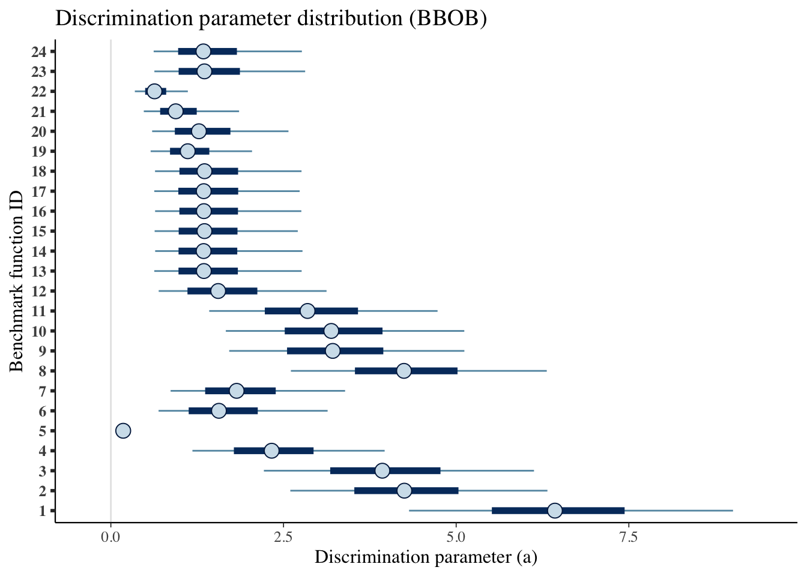
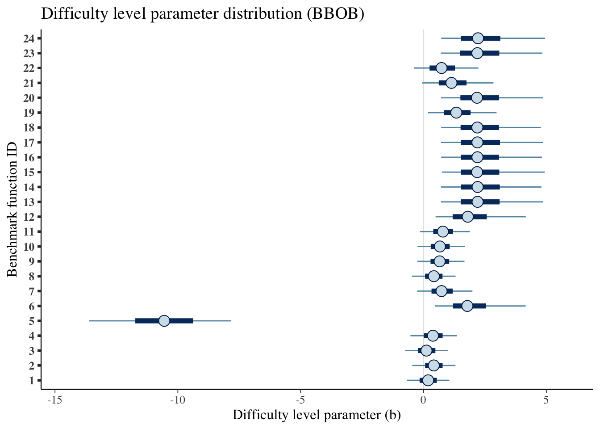
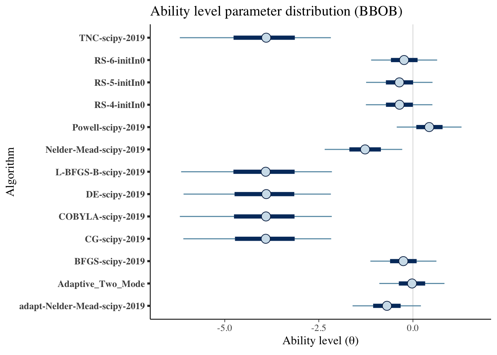
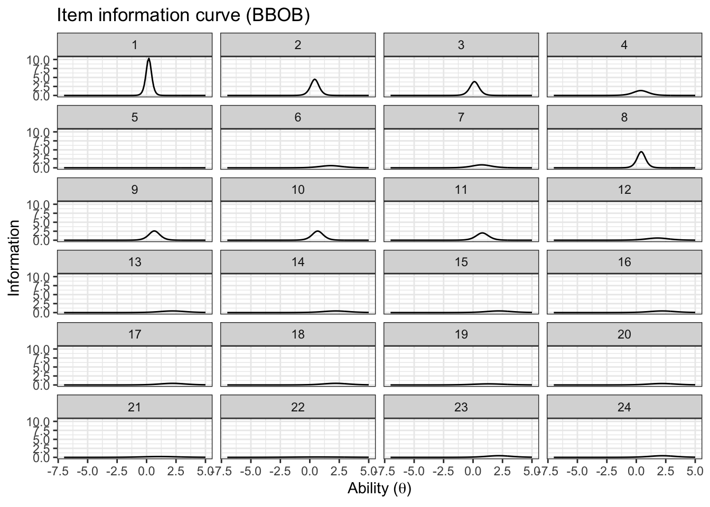
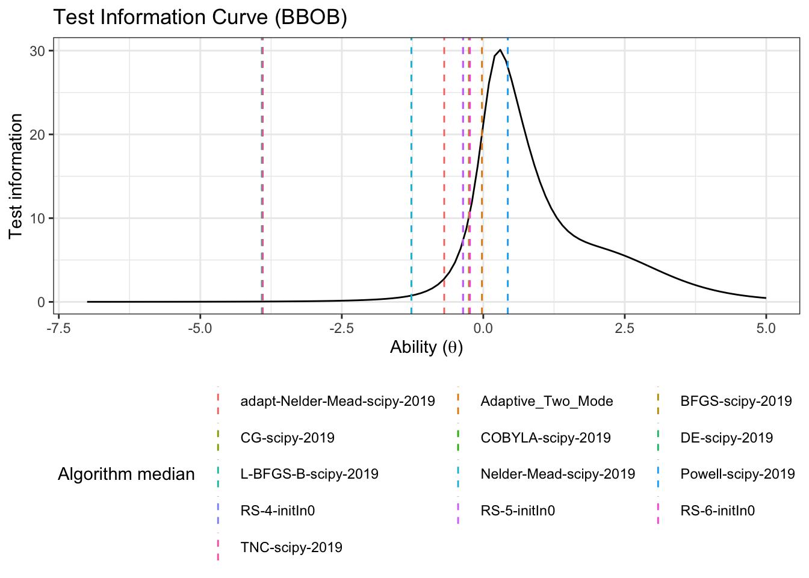

Chapter 4 Case Study I: BBOB 2019
4.1 Importing the data
To illustrate and make the analysis, we will the number of dimensions equal to 5 (since the benchmark functions are all scalable). To do an analysis with different dimensions just change the code here
d_bbob <- read_csv('data/bbob2019.csv') %>%
select(algId, DIM, funcId, runs, succ, budget) %>%
filter(DIM==5) %>%
mutate(algId_index = as.integer(as.factor(algId)))
#vector with the names in order
benchmarks <- seq(1,24)
algorithms <- levels(as.factor(d_bbob$algId))4.2 Preparing the Stan data
Creating a list for Stan.
bbob_standata <- list(
N = nrow(d_bbob),
y_succ = as.integer(d_bbob$succ),
N_tries = as.integer(d_bbob$runs),
p = d_bbob$algId_index,
Np = as.integer(length(unique(d_bbob$algId_index))),
item = as.integer(d_bbob$funcId),
Nitem = as.integer(length(unique(d_bbob$funcId)))
)Calling the model with cmdstanr
irt2pl <- cmdstan_model('models/irt2pl.stan')
fit_bbob <- irt2pl$sample(
data= bbob_standata,
chains = 4,
iter_sampling = 4000,
parallel_chains = 4,
max_treedepth = 15
)
fit_bbob$save_object(file='fitted/bbob5.RDS')To load the fitted model (to save time in compiling this document)
fit_bbob<-readRDS('fitted/bbob5.RDS')4.3 Diagnostics
Getting the draws from the posterior
draws_a <- fit_bbob$draws('a')
draws_b <- fit_bbob$draws('b')
draws_theta <- fit_bbob$draws('theta')4.3.1 Traceplots
mcmc_trace(draws_a)
mcmc_trace(draws_b)
mcmc_trace(draws_theta)
4.3.2 Rhat and Effective samples
fit_bbob$summary(c('a','b', 'theta')) %>%
kable(caption='Summary values fit of the model, including effective samples and Rhat',
booktabs=T,
digits =3,
format='html') %>%
kable_styling() %>%
scroll_box()| variable | mean | median | sd | mad | q5 | q95 | rhat | ess_bulk | ess_tail |
|---|---|---|---|---|---|---|---|---|---|
| a[1] | 6.522 | 6.430 | 1.424 | 1.420 | 4.318 | 9.009 | 1.000 | 14280.165 | 11093.421 |
| a[2] | 4.324 | 4.250 | 1.138 | 1.115 | 2.598 | 6.321 | 1.000 | 12287.535 | 9783.007 |
| a[3] | 4.020 | 3.931 | 1.189 | 1.173 | 2.216 | 6.127 | 1.000 | 10109.111 | 9225.800 |
| a[4] | 2.414 | 2.328 | 0.859 | 0.852 | 1.181 | 3.964 | 1.000 | 9537.022 | 8863.253 |
| a[5] | 0.184 | 0.179 | 0.040 | 0.038 | 0.127 | 0.255 | 1.001 | 9960.494 | 11299.490 |
| a[6] | 1.692 | 1.565 | 0.762 | 0.714 | 0.691 | 3.139 | 1.000 | 9466.497 | 6907.590 |
| a[7] | 1.939 | 1.821 | 0.789 | 0.742 | 0.865 | 3.392 | 1.000 | 8753.252 | 6591.984 |
| a[8] | 4.318 | 4.244 | 1.128 | 1.095 | 2.607 | 6.312 | 1.000 | 12418.532 | 10295.961 |
| a[9] | 3.290 | 3.213 | 1.042 | 1.031 | 1.714 | 5.119 | 1.000 | 11748.731 | 8343.076 |
| a[10] | 3.266 | 3.192 | 1.056 | 1.042 | 1.665 | 5.118 | 1.000 | 9944.351 | 6922.556 |
| a[11] | 2.939 | 2.848 | 1.015 | 0.996 | 1.424 | 4.730 | 1.001 | 10865.103 | 7069.033 |
| a[12] | 1.685 | 1.554 | 0.764 | 0.726 | 0.693 | 3.123 | 1.000 | 9145.424 | 7175.492 |
| a[13] | 1.478 | 1.347 | 0.670 | 0.612 | 0.629 | 2.763 | 1.000 | 10919.706 | 8940.304 |
| a[14] | 1.478 | 1.343 | 0.676 | 0.606 | 0.641 | 2.775 | 1.001 | 11612.301 | 9517.923 |
| a[15] | 1.473 | 1.355 | 0.666 | 0.613 | 0.634 | 2.707 | 1.000 | 9236.735 | 7824.179 |
| a[16] | 1.482 | 1.347 | 0.670 | 0.608 | 0.641 | 2.758 | 1.000 | 9694.299 | 7818.154 |
| a[17] | 1.476 | 1.345 | 0.674 | 0.618 | 0.628 | 2.734 | 1.001 | 9164.008 | 8435.066 |
| a[18] | 1.484 | 1.356 | 0.666 | 0.609 | 0.640 | 2.761 | 1.000 | 10599.824 | 8511.088 |
| a[19] | 1.182 | 1.113 | 0.457 | 0.412 | 0.576 | 2.044 | 1.000 | 11309.124 | 8818.726 |
| a[20] | 1.388 | 1.275 | 0.624 | 0.582 | 0.598 | 2.572 | 1.000 | 9183.205 | 7985.132 |
| a[21] | 1.023 | 0.939 | 0.439 | 0.379 | 0.477 | 1.857 | 1.000 | 8203.122 | 8222.777 |
| a[22] | 0.670 | 0.632 | 0.247 | 0.221 | 0.347 | 1.115 | 1.001 | 7799.858 | 8398.404 |
| a[23] | 1.495 | 1.355 | 0.691 | 0.631 | 0.630 | 2.813 | 1.000 | 10373.600 | 8546.457 |
| a[24] | 1.469 | 1.340 | 0.675 | 0.608 | 0.620 | 2.766 | 1.000 | 10191.232 | 8757.702 |
| b[1] | 0.190 | 0.189 | 0.526 | 0.517 | -0.675 | 1.049 | 1.003 | 1655.798 | 3234.633 |
| b[2] | 0.421 | 0.418 | 0.537 | 0.529 | -0.458 | 1.301 | 1.003 | 1714.585 | 3269.607 |
| b[3] | 0.126 | 0.120 | 0.532 | 0.528 | -0.750 | 0.999 | 1.003 | 1662.807 | 3212.317 |
| b[4] | 0.400 | 0.384 | 0.582 | 0.572 | -0.532 | 1.366 | 1.003 | 1815.237 | 3702.849 |
| b[5] | -10.606 | -10.553 | 1.755 | 1.745 | -13.618 | -7.825 | 1.000 | 9271.595 | 11117.350 |
| b[6] | 1.987 | 1.784 | 1.170 | 0.969 | 0.476 | 4.159 | 1.001 | 4259.516 | 6617.055 |
| b[7] | 0.788 | 0.734 | 0.711 | 0.633 | -0.260 | 1.992 | 1.002 | 2240.195 | 4102.527 |
| b[8] | 0.421 | 0.420 | 0.536 | 0.526 | -0.463 | 1.306 | 1.003 | 1742.331 | 3435.551 |
| b[9] | 0.678 | 0.657 | 0.590 | 0.561 | -0.248 | 1.668 | 1.002 | 2018.667 | 3758.684 |
| b[10] | 0.690 | 0.667 | 0.600 | 0.572 | -0.247 | 1.680 | 1.002 | 2031.685 | 3763.513 |
| b[11] | 0.824 | 0.788 | 0.651 | 0.591 | -0.148 | 1.884 | 1.001 | 2192.201 | 3938.860 |
| b[12] | 1.993 | 1.802 | 1.164 | 0.998 | 0.492 | 4.163 | 1.001 | 4568.658 | 6773.007 |
| b[13] | 2.420 | 2.202 | 1.295 | 1.138 | 0.709 | 4.876 | 1.000 | 5568.265 | 7220.730 |
| b[14] | 2.413 | 2.204 | 1.276 | 1.138 | 0.713 | 4.800 | 1.001 | 5160.159 | 6932.234 |
| b[15] | 2.419 | 2.182 | 1.298 | 1.123 | 0.747 | 4.936 | 1.001 | 4644.611 | 7607.595 |
| b[16] | 2.400 | 2.195 | 1.266 | 1.129 | 0.717 | 4.822 | 1.001 | 5039.876 | 7317.296 |
| b[17] | 2.420 | 2.195 | 1.290 | 1.142 | 0.715 | 4.873 | 1.001 | 5288.295 | 7216.751 |
| b[18] | 2.401 | 2.191 | 1.280 | 1.132 | 0.719 | 4.779 | 1.001 | 5412.655 | 7130.342 |
| b[19] | 1.432 | 1.336 | 0.880 | 0.793 | 0.186 | 2.976 | 1.001 | 3445.220 | 5449.716 |
| b[20] | 2.406 | 2.178 | 1.298 | 1.140 | 0.714 | 4.874 | 1.001 | 5362.057 | 6661.986 |
| b[21] | 1.239 | 1.138 | 0.905 | 0.829 | -0.056 | 2.847 | 1.001 | 3242.422 | 4953.712 |
| b[22] | 0.810 | 0.734 | 0.830 | 0.763 | -0.397 | 2.233 | 1.002 | 3062.358 | 4872.259 |
| b[23] | 2.398 | 2.192 | 1.286 | 1.155 | 0.702 | 4.841 | 1.001 | 5267.369 | 6601.671 |
| b[24] | 2.441 | 2.218 | 1.307 | 1.153 | 0.721 | 4.945 | 1.001 | 5375.168 | 7470.779 |
| theta[1] | -0.691 | -0.690 | 0.553 | 0.542 | -1.604 | 0.212 | 1.003 | 1792.092 | 3591.987 |
| theta[2] | -0.024 | -0.024 | 0.528 | 0.519 | -0.892 | 0.838 | 1.003 | 1681.458 | 3361.608 |
| theta[3] | -0.255 | -0.254 | 0.532 | 0.523 | -1.131 | 0.624 | 1.003 | 1656.443 | 3263.409 |
| theta[4] | -3.989 | -3.911 | 1.205 | 1.175 | -6.100 | -2.172 | 1.000 | 7015.079 | 9333.640 |
| theta[5] | -4.003 | -3.904 | 1.230 | 1.185 | -6.193 | -2.156 | 1.000 | 7087.536 | 9941.552 |
| theta[6] | -3.993 | -3.896 | 1.201 | 1.171 | -6.094 | -2.180 | 1.000 | 7278.511 | 9311.373 |
| theta[7] | -4.002 | -3.912 | 1.229 | 1.200 | -6.159 | -2.152 | 1.000 | 7797.899 | 8536.771 |
| theta[8] | -1.284 | -1.271 | 0.634 | 0.621 | -2.345 | -0.284 | 1.002 | 2255.589 | 4664.016 |
| theta[9] | 0.436 | 0.433 | 0.523 | 0.519 | -0.430 | 1.292 | 1.003 | 1642.108 | 2997.515 |
| theta[10] | -0.359 | -0.356 | 0.537 | 0.529 | -1.250 | 0.518 | 1.003 | 1664.464 | 3065.114 |
| theta[11] | -0.359 | -0.360 | 0.538 | 0.535 | -1.243 | 0.521 | 1.003 | 1652.009 | 3192.851 |
| theta[12] | -0.232 | -0.235 | 0.532 | 0.524 | -1.110 | 0.644 | 1.003 | 1663.252 | 3203.973 |
| theta[13] | -4.002 | -3.899 | 1.220 | 1.195 | -6.193 | -2.180 | 1.000 | 7255.309 | 8999.452 |
4.4 Results
Let’s get some summary descriptive statistics of the posterior
fit_summary_a_b <- fit_bbob$summary(c('a','b'))
fit_summary_a <- fit_bbob$summary(c('a'))
fit_summary_b <- fit_bbob$summary(c('b'))
fit_summary_theta <- fit_bbob$summary(c('theta'))4.4.1 Difficulty and discrimination
Table for the benchmark functions
table_benchmarks <- fit_summary_a_b %>%
select('Benchmark ID'=variable,
Median=median,
'CI 5%'=q5,
'CI 95%'=q95)
table_benchmarks$'Benchmark ID'<-rep(benchmarks,2)
kable(table_benchmarks,
caption='Summary values of the discrimination and difficulty level parameters for the BBOB benchmarks',
booktabs=T,
digits =3,
format='html',
linesep = "") %>%
kable_styling() %>%
pack_rows("Discrimination value (a)",1,24) %>%
pack_rows("Difficulty level (b)",25,48)| Benchmark ID | Median | CI 5% | CI 95% |
|---|---|---|---|
| Discrimination value (a) | |||
| 1 | 6.430 | 4.318 | 9.009 |
| 2 | 4.250 | 2.598 | 6.321 |
| 3 | 3.931 | 2.216 | 6.127 |
| 4 | 2.328 | 1.181 | 3.964 |
| 5 | 0.179 | 0.127 | 0.255 |
| 6 | 1.565 | 0.691 | 3.139 |
| 7 | 1.821 | 0.865 | 3.392 |
| 8 | 4.244 | 2.607 | 6.312 |
| 9 | 3.213 | 1.714 | 5.119 |
| 10 | 3.192 | 1.665 | 5.118 |
| 11 | 2.848 | 1.424 | 4.730 |
| 12 | 1.554 | 0.693 | 3.123 |
| 13 | 1.347 | 0.629 | 2.763 |
| 14 | 1.343 | 0.641 | 2.775 |
| 15 | 1.355 | 0.634 | 2.707 |
| 16 | 1.347 | 0.641 | 2.758 |
| 17 | 1.345 | 0.628 | 2.734 |
| 18 | 1.356 | 0.640 | 2.761 |
| 19 | 1.113 | 0.576 | 2.044 |
| 20 | 1.275 | 0.598 | 2.572 |
| 21 | 0.939 | 0.477 | 1.857 |
| 22 | 0.632 | 0.347 | 1.115 |
| 23 | 1.355 | 0.630 | 2.813 |
| 24 | 1.340 | 0.620 | 2.766 |
| Difficulty level (b) | |||
| 1 | 0.189 | -0.675 | 1.049 |
| 2 | 0.418 | -0.458 | 1.301 |
| 3 | 0.120 | -0.750 | 0.999 |
| 4 | 0.384 | -0.532 | 1.366 |
| 5 | -10.553 | -13.618 | -7.825 |
| 6 | 1.784 | 0.476 | 4.159 |
| 7 | 0.734 | -0.260 | 1.992 |
| 8 | 0.420 | -0.463 | 1.306 |
| 9 | 0.657 | -0.248 | 1.668 |
| 10 | 0.667 | -0.247 | 1.680 |
| 11 | 0.788 | -0.148 | 1.884 |
| 12 | 1.802 | 0.492 | 4.163 |
| 13 | 2.202 | 0.709 | 4.876 |
| 14 | 2.204 | 0.713 | 4.800 |
| 15 | 2.182 | 0.747 | 4.936 |
| 16 | 2.195 | 0.717 | 4.822 |
| 17 | 2.195 | 0.715 | 4.873 |
| 18 | 2.191 | 0.719 | 4.779 |
| 19 | 1.336 | 0.186 | 2.976 |
| 20 | 2.178 | 0.714 | 4.874 |
| 21 | 1.138 | -0.056 | 2.847 |
| 22 | 0.734 | -0.397 | 2.233 |
| 23 | 2.192 | 0.702 | 4.841 |
| 24 | 2.218 | 0.721 | 4.945 |
A more visual representation.
mcmc_intervals(draws_a) +
scale_y_discrete(labels=benchmarks)+
labs(x='Discrimination parameter (a)',
y='Benchmark function ID',
title='Discrimination parameter distribution (BBOB)')## Scale for 'y' is already present. Adding another scale for 'y', which will
## replace the existing scale.
mcmc_intervals(draws_b) +
scale_y_discrete(labels=benchmarks)+
labs(x='Difficulty level parameter (b)',
y='Benchmark function ID',
title='Difficulty level parameter distribution (BBOB)')## Scale for 'y' is already present. Adding another scale for 'y', which will
## replace the existing scale.
4.4.2 Ability
Creating a table:
table_algorithms <- fit_summary_theta %>%
select(Algorithms=variable,
Median=median,
'CI 5%'=q5,
'CI 95%'=q95)
table_algorithms$Algorithms <- algorithms
kable(table_algorithms,
caption='Summary values of the ability level of the algorithms (BBOB)',
booktabs=T,
digits =3,
format='html',
linesep = "") %>%
kable_styling() | Algorithms | Median | CI 5% | CI 95% |
|---|---|---|---|
| adapt-Nelder-Mead-scipy-2019 | -0.690 | -1.604 | 0.212 |
| Adaptive_Two_Mode | -0.024 | -0.892 | 0.838 |
| BFGS-scipy-2019 | -0.254 | -1.131 | 0.624 |
| CG-scipy-2019 | -3.911 | -6.100 | -2.172 |
| COBYLA-scipy-2019 | -3.904 | -6.193 | -2.156 |
| DE-scipy-2019 | -3.896 | -6.094 | -2.180 |
| L-BFGS-B-scipy-2019 | -3.912 | -6.159 | -2.152 |
| Nelder-Mead-scipy-2019 | -1.271 | -2.345 | -0.284 |
| Powell-scipy-2019 | 0.433 | -0.430 | 1.292 |
| RS-4-initIn0 | -0.356 | -1.250 | 0.518 |
| RS-5-initIn0 | -0.360 | -1.243 | 0.521 |
| RS-6-initIn0 | -0.235 | -1.110 | 0.644 |
| TNC-scipy-2019 | -3.899 | -6.193 | -2.180 |
A more visual representation.
mcmc_intervals(draws_theta) +
scale_y_discrete(labels=algorithms)+
labs(x=unname(TeX("Ability level ($\\theta$)")),
y='Algorithm',
title='Ability level parameter distribution (BBOB)')## Scale for 'y' is already present. Adding another scale for 'y', which will
## replace the existing scale.
4.4.3 Item information
First let’s create a few helper functions to calculate the item information
p_info <- function(a,b, theta){
return(exp(a*(theta-b))/(1+exp(a*(theta-b))))
}
q_info <- function(a,b, theta){
return(1-p_info(a,b, theta))
}
#a and b are a vector of 3 a[1] is lower q05 a[2] is median and a[3] is q95
#return a data frame ready to be plottted
item_info_with_intervals <- function(a,b,item, thetamin=-5, thetamax=5,step=0.1){
theta <- seq(from=thetamin, to=thetamax, by=step)
info_median <- a[1]^2*p_info(a[1],b[1],theta)*q_info(a[1],b[1],theta)
info_lower <- a[2]^2*p_info(a[2],b[2],theta)*q_info(a[2],b[2],theta)
info_higher <- a[3]^2*p_info(a[3],b[3],theta)*q_info(a[3],b[3],theta)
out<- data.frame(Information= c(info_lower,info_median,info_higher),
theta=c(theta,theta,theta),
pars=c(rep('q05',length(theta)),
rep('median',length(theta)),
rep('q95',length(theta))),
item=c(rep(item,length(theta)),
rep(item,length(theta)),
rep(item,length(theta))))
return(out)
}Creating a single data frame
item_information_df <- NULL
for(i in seq(1:length(benchmarks))){
a<-as.matrix(fit_summary_a[i,c(3,6,7)])
b<-as.matrix(fit_summary_b[i,c(3,6,7)])
iinfo <- item_info_with_intervals(a=a,b=b,item = i,thetamin = -7, thetamax = 5)
item_information_df <- rbind(item_information_df,iinfo)
}Now we can create an information plot for every item
item_information_df %>%
pivot_wider(names_from = 'pars', values_from = 'Information') %>%
ggplot(aes(x=theta))+
geom_line(aes(y=median), color='black')+
facet_wrap(~item,
ncol=4) +
labs(title='Item information curve (BBOB)',
x=unname(TeX("Ability ($\\theta$)")),
y='Information',
color='Information interval')+
theme_bw() +
theme(legend.position = 'bottom')
4.4.4 Test information
We can also look at the test information. First, we need to pivot wider so we can sum the items
test_information_df <- item_information_df %>%
pivot_wider(names_from = 'item', values_from = 'Information') %>%
mutate(TestInfo = dplyr::select(., -theta, -pars) %>% rowSums()) %>%
dplyr::select(theta, pars, TestInfo)Now that we have calculated the test parameters we can plot the test information
First let’s get a horizontal line to show where the algorithms median ability lies
alg_median <- fit_summary_theta %>%
mutate(Algorithm=algorithms) %>%
select(Algorithm, median) test_information_df %>%
dplyr::select(theta, pars, TestInfo) %>%
pivot_wider(names_from = 'pars', values_from = 'TestInfo') %>%
ggplot(aes(x=theta)) +
geom_line(aes(y=median))+
geom_vline(data=alg_median, aes(xintercept=median,color=Algorithm),linetype='dashed')+
labs(
title='Test Information Curve (BBOB)',
x=unname(TeX("Ability ($\\theta$)")),
y='Test information',
color='Algorithm median'
)+
theme_bw()+
guides(color=guide_legend(nrow=5,byrow=TRUE))+
theme(legend.position = 'bottom')